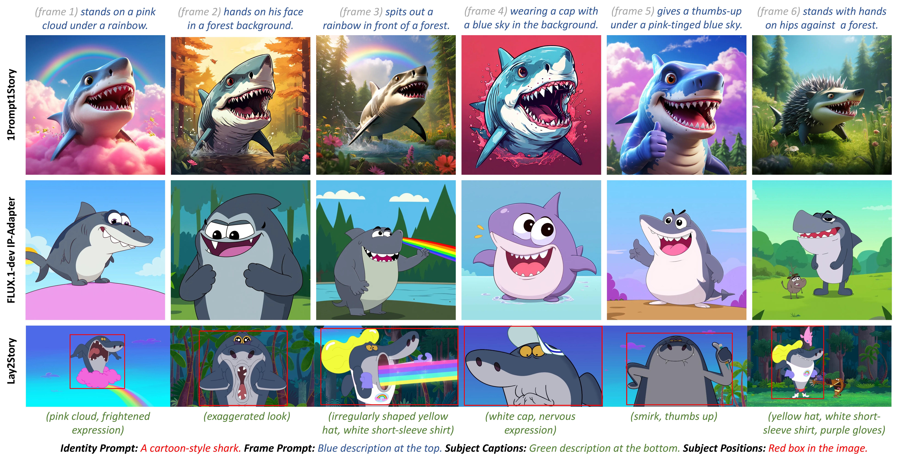
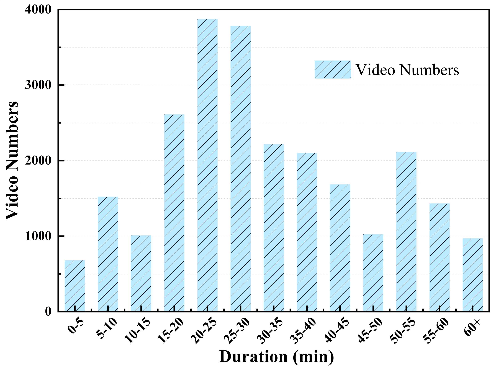
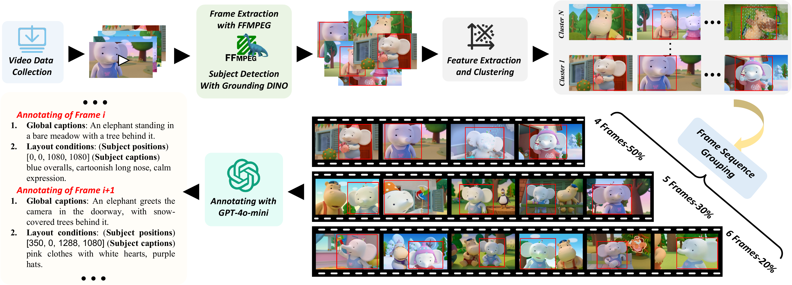
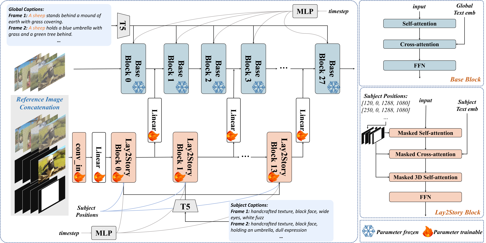
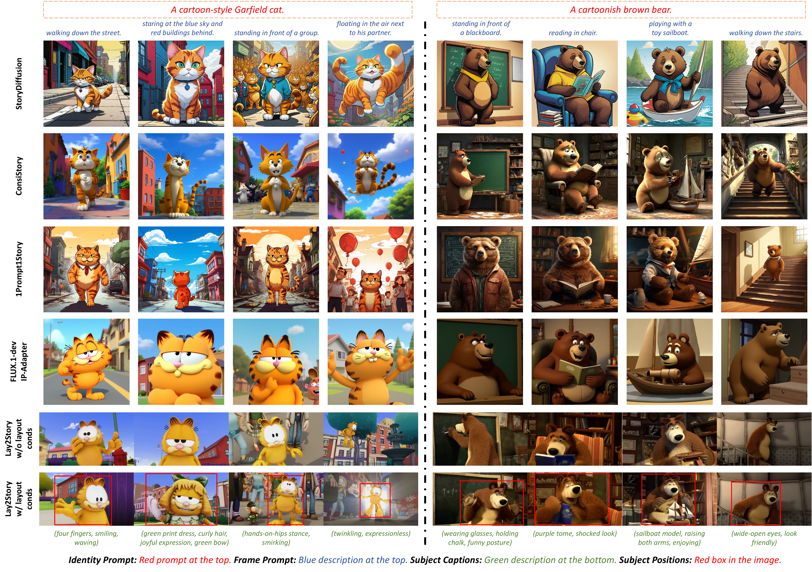
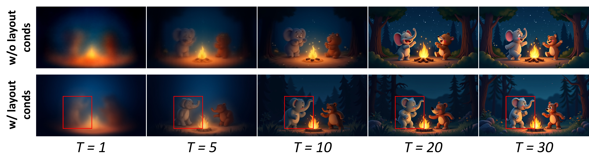

🎮 费曼一分钟
Storytelling：用一组 prompt 生成多帧图，主角外观要一致。现有 training-free（改 cross-frame attention）和 training-based 都难精细控制位置、衣着、表情、姿势，且缺大规模带 layout 标注的数据。
Lay2Story 定义新任务 Layout-Togglable Storytelling：可选输入主体 bbox + 细粒度 subject caption（绿字描述 + 红框位置）。训练时随机 dropout layout → 推理时可开可关。
模型：以 PixArt-α DiT 为 global branch（全局 caption）；仿 ControlNet 加 subject branch（masked self/cross-attn + masked 3D self-attn，reference image 拼 9 通道 latent）。数据 Lay2Story-1M（102 万张、720p+ 卡通）+ 评测 Lay2Story-Bench（3000 prompts）。
关键数：w/ layout — DreamSim 0.1324 CLIP-I 0.9299 FID 26.71 Recall@1 0.7012 · 推理 14s（25 steps）vs FLUX IPA 61s。
📄 Figure 1：与 SOTA 定性对比

Abstract
Storytelling lacks fine-grained guidance and inter-frame interaction; scarce data blocks control of position, appearance, clothing, expression, posture.
Layout conditions (position + detailed attributes) strengthen consistency and enable precise control → Layout-Togglable Storytelling.
Lay2Story-1M (1M+ images, 11,300h cartoon video), Lay2Story-Bench (3K prompts), Lay2Story on DiTs — SOTA on consistency, semantics, aesthetics.
故事生成缺细粒度引导与帧间交互；数据稀缺导致无法控制主体位置/外观/衣着/表情/姿势。
布局条件（位置+细节属性）增强一致性并精确控制 → 定义 Layout-Togglable Storytelling。
Lay2Story-1M、Lay2Story-Bench、基于 DiT 的 Lay2Story — 一致性/语义/美学 SOTA。
任务定义 + 百万级 layout 数据 + 双分支 DiT 架构。与 WISA 同组（JD/360 系），但聚焦卡通故事一致性而非物理定律。
1. Introduction
Training-free (ConsiStory, 1Prompt1Story, StoryDiffusion): modify cross-frame self-attention on frozen T2I — versatile but weak fine control.
Training-based (StoryGen, FLUX IP-Adapter): learn from frame sequences — limited by small datasets without subject refinement.
Baselines compared: BLIP-Diffusion, StoryGen, ConsiStory, StoryDiffusion, 1Prompt1Story, FLUX.1-dev IP-Adapter.
Training-free：改跨帧注意力，通用但难精细控制。
Training-based：序列学习，缺主体细化标注的数据集限制上限。
全面对比上述 SOTA 方法。
「Togglable」= 训练时 layout dropout，推理可选 bbox+caption。比纯 layout-to-image 更贴近 story 产品：同一 identity，逐帧变 pose/服装/场景。
3. Lay2Story-1M & Bench
~200K sequences × 4–6 frames = 1.02M images, ≥720p. Annotations: global caption (identity + frame prompt), subject bbox, subject detail caption.
Sources: PBS Kids, Khan Academy (~12K), Internet Archive (~8K), YouTube (~20K cartoon). Filter: Laion-Aes + SD Safety → ~25K videos, 11,300h.
Pipeline: FFmpeg 0.25 FPS → GroundingDINO top box → CLIP + K-means (150 frames / 12 centers) → group 4/5/6 frames (50/30/20%) → GPT-4o mini annotate.
约 20 万序列、每序列 4–6 帧，共 102 万张 ≥720p。标注：全局 caption（identity+frame）、主体框、主体细节描述。
视频源：教育平台 + 档案馆 + YouTube 卡通；美学+NSFW 过滤后约 2.5 万条、1.13 万小时。
流水线：抽帧 → 检测主体 → 聚类去冗余 → 分组 → GPT-4o mini 标注。
| Dataset | Images | Res | Subject detail |
|---|---|---|---|
| StorySalon | 160K | 432×803 | no |
| StoryDB | 100K | 512² | no |
| StoryStream | 258K | 480×854 | no |
| Lay2Story-1M | 1.02M | 720×1080 | yes |
仅标注最显眼单一角色（卡通简化任务）。只发布 YouTube ID + 处理代码，不直接发 raw 视频。
📄 Figure 2–3：视频时长分布 & 数据流水线


Lay2Story-Bench: 3,000 samples from top 10% aesthetic videos; 655 prompt sets; lengths 4/5/6 = 375/180/100; ≤8 sets per category; train/test video ID disjoint.
评测集 3000 样本，美学 top 10%；655 组 prompt；与 ConsiStory（100 组/500 prompt/无 GT）相比更大、有 HQ 原图与主体标注。
ConsiStory: 100 sets / 500 prompts / 无原图 GT。Lay2Story-Bench: 655 sets / 3000 / 有 HQ GT + layout 标注。
4. Method
Inputs: reference image $\mathcal{I}_{ref}$, bboxes $\mathcal{B}_{ref},\mathcal{B}$ → masks $\mathcal{M}_{ref},\mathcal{M}$; global caption $T_{global}$; subject caption $T_{subject}$.
Global branch: PixArt-α fine-tuned — AdaLN-single + self-attn + cross-attn(T5 $TM_{global}$).
Subject branch (ControlNet-style, every 2 global blocks): masked self-attn, masked cross-attn, masked 3D self-attn; zero-init skip $\mathcal{Z}^n = \mathcal{Z}^n + F_m(\mathcal{Z}^m_{sub})$.
输入：参考图、bbox→mask、全局/主体文本。
全局支路：PixArt-α 微调，负责整体画质。
主体支路：掩码注意力 + 3D 跨帧注意力；每 2 个 global block 注入一次 zero linear 输出。
$$\mathrm{MA}(Q,K,V,M)=\mathrm{softmax}\!\left(\frac{QK^T}{\sqrt{d_k}}+M\right)V$$
背景位置 $M$ 为大负数 → 只在主体区域算注意力。3D 版 reshape 为 $(fhw)\times(fhw)$ 做跨帧主体一致。
Reference concat: VAE $\mathcal{F}_{rep}$ (4ch) + mask $\mathcal{M}_{ref}$ (1ch) + noise $\mathcal{Z}$ (4ch) → pad to $f$ frames → 9ch conv → 4ch $\mathcal{Z}_{sub}$.
Layout-togglable training: 25% masks fully valid (no bbox); 25% replace $T_{subject}$ with $T_{global}$.
参考图 VAE 特征 + mask + 噪声拼 9 通道再压回 4 通道。
训练随机：25% 全图有效 mask（模拟无 bbox）；25% 用全局 caption 替代 subject caption（模拟无细描述）。
Dropout layout 条件 → 推理时 w/o lc 仍可用（仅 identity+frame prompt），w/ lc 开启精细控制。Fig.6 显示早期去噪步（T=5）layout 帮助最大。
📄 Figure 4：Lay2Story 双分支架构

flowchart TB
subgraph global [Global Branch — PixArt-α]
Z[Noise latent Z] --> SA[Self-Attn]
SA --> CA[Cross-Attn + T5 global]
end
subgraph subject [Subject Branch]
Ref[Ref VAE + mask + Z] --> MSA[Masked Self-Attn]
MSA --> MCA[Masked Cross-Attn + T5 subject]
MCA --> M3D[Masked 3D Self-Attn]
end
M3D -->|zero linear every 2 blocks| SA
Bbox[Layout bbox M] --> MSA
Bbox --> MCA
Bbox --> M3D
5. Experiments
| Method | DreamSim↓ | CLIP-I↑ | FID↓ | R@1↑ | Human↑ | Time(s) |
|---|---|---|---|---|---|---|
| 1Prompt1Story | 0.2429 | 0.8461 | 66.79 | 0.5583 | 0.6742 | 20.69 |
| FLUX.1-dev IPA | 0.1533 | 0.9138 | 33.18 | 0.6482 | 0.7059 | 61.38 |
| Lay2Story w/o lc | 0.1602 | 0.9214 | 35.82 | 0.6376 | 0.7123 | 13.63 |
| Lay2Story w/ lc | 0.1324 | 0.9299 | 26.71 | 0.7012 | 0.7561 | 14.02 |
w/ layout 全指标 SOTA；w/o layout 仍次优（CLIP-I 第二）。推理 14s，仅比 BLIP-Diffusion 慢但远快于 FLUX IPA。
评测：DreamSim + CLIP-I（CarveKit 去背景）；FID；Recall@1；3 人人工偏好。
去 subject branch：FID 110.58；去 ref image：50.27；去 masked 3D SA：66.14；完整：26.71。3D 跨帧注意力对一致性最关键。
📄 Figure 5–6：定性对比 & Layout 消融


6. Conclusion
Layout-Togglable Storytelling + Lay2Story-1M + Lay2Story-Bench + DiT dual-branch Lay2Story — best consistency, semantics, aesthetics on story generation.
定义可开关 layout 的故事生成任务；百万数据与 benchmark；双分支 DiT 方法全面超越现有 story 方法。
仅卡通单主体；无公开代码（截至 2026）；真人/多主体未覆盖；layout 推理需额外检测或人工框。
符号速查表
| 符号 | 含义 |
|---|---|
| Layout-Togglable | layout（bbox + subject caption）可开关的故事生成 |
| $\mathcal{Z},\mathcal{Z}_{sub}$ | 全局 / 主体支路噪声 latent |
| $\mathcal{M},\mathcal{M}_s,\mathcal{M}_c,\mathcal{M}_t$ | 空间 / self / cross / 3D 注意力掩码 |
| identity + frame prompt | 全局 caption 格式：角色身份 + 本帧情节 |
| w/ lc / w/o lc | 推理是否注入 layout 条件 |
| Lay2Story-1M | 102 万图、20 万序列、layout 标注 |
论证结构总览
→ 洞察（layout 引导帧间细粒度交互）
→ 任务（Layout-Togglable Storytelling）
→ 数据（Lay2Story-1M 流水线 + Bench）
→ 方法（PixArt-α global + ControlNet式 subject + masked 3D SA）
→ 训练（25% mask/caption dropout）
→ 证据（Tab.3 SOTA + 消融 + Fig.5/6）
arXiv:2508.08949 · ICCV 2025 · JD.com · 本地精读（gitignored）
🧩 结构化十问
Q1 · 解决什么问题？
Q2 · 新问题吗？
Q3 · 核心假设？
Q4 · 相关工作？
Q5 · 方案关键？
Q6 · 实验设计？
Q7 · 数据集与开源？
Q8 · 结果支持假设？
Q9 · 贡献？
Q10 · 下一步？
🔬 深挖追问
为何 masked 3D self-attn？
Story 一致性本质是跨帧同一主体 token 的信息共享。只在 bbox 内做 3D full attention，避免背景噪声稀释 identity signal；比 training-free 改全局 attention 更可控。
Layout-togglable vs ControlNet
ControlNet 条件通常必选；Lay2Story 训练时随机去掉 bbox/caption，使模型学会退化到普通 story 模式——产品可「高级用户开 layout、普通用户只写 prompt」。
盲区
- 仅标注最显眼角色 → 多角色故事失效
- 卡通域 → open-set 真人迁移未验证
- 推理 w/ lc 需 bbox：GroundingDINO 误差会传播
- 与 WISA 同团队：数据工程能力强，但 code 释放滞后影响复现